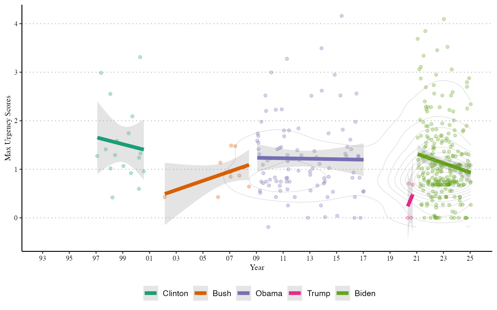
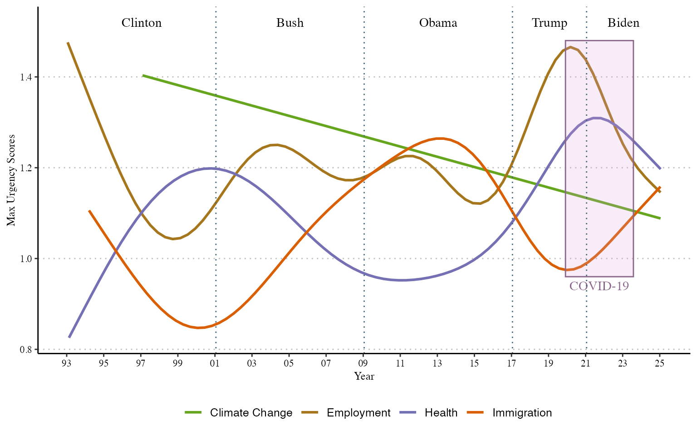

We investigate how urgently US presidents speak about climate change-related priorities in 3720 speeches from 1993 to 2025 for Bill Clinton, George W. Bush, Barack Obama, Donald Trump, and Joe Biden during the periods they were in office. The period captures the entrance of climate change into public political discourse and other relevant external events that might change how climate change priorities are expressed, such as the 2008 recession, the Paris Agreement signing in 2015, and the COVID pandemic. The texts were collected from the American Presidency Project and include official speeches and remarks at domestic and international press conferences. We identify 867 climate change-related priorities in these texts where terms such as climate change, global warming, carbon emissions, and clean energy were mentioned.
Do we see different patterns in how presidents express the urgency of climate change?
Presidents’ rhetorical styles might affect how they communicate the urgency of climate change. For example, one president might favour emphasising urgency through terms from one dictionary while others might use a broader vocabulary. Below, we fit ordinary least squares models to different urgency dimensions by president and over time. The models suggest that presidents do not differ much in their use of urgency dimensions. Countering a general trend to offering less commitment over time, Obama and Biden exhibit significantly higher levels of commitment than Clinton. Bush and Trump use intensity significantly less than Clinton.
| Commitment | Timing | Frequency | Intensity | |
|---|---|---|---|---|
| Bush | 1.076 | -0.234 | 0.046 | -1.862* |
| (0.716) | (1.404) | (0.091) | (0.819) | |
| Obama | 1.713* | 1.638 | -0.036 | -1.598+ |
| (0.732) | (1.436) | (0.093) | (0.837) | |
| Trump | 1.387 | 1.107 | -0.044 | -3.357* |
| (1.425) | (2.793) | (0.180) | (1.629) | |
| Biden | 2.950* | 2.892 | -0.073 | -2.009 |
| (1.172) | (2.298) | (0.148) | (1.340) | |
| Year | -0.126** | -0.172+ | 0.004 | 0.072 |
| (0.048) | (0.094) | (0.006) | (0.055) | |
| Num.Obs. | 867 | 867 | 867 | 867 |
| R2 | 0.010 | 0.010 | 0.002 | 0.011 |
| R2 Adj. | 0.004 | 0.004 | -0.004 | 0.005 |
| AIC | 3779.2 | 4946.8 | 193.9 | 4011.5 |
| BIC | 3812.6 | 4980.1 | 227.2 | 4044.9 |
| Log.Lik. | -1882.607 | -2466.386 | -89.942 | -1998.755 |
| RMSE | 2.12 | 4.16 | 0.27 | 2.43 |
How has the overall urgency climate change-related priorities evolved in American presidential speeches since 1993?
The maximum urgency that presidents spoke of climate change when they spoke of climate change while in office is shown below. Climate change appears more often in presidential speeches during Obama and especially Biden’s presidencies, but interestingly Clinton spoke of climate change consistently with higher urgency. Whereas Democratic presidents spoke of climate change as though it were something that `must’ be addressed, or more, Republican presidents rarely talked about climate change as a political priority while in office, except towards the end of their terms in office. Bush and, especially, Trump talked about climate change as something considerably less urgent.

How does the urgency in which American presidents speak of climate change-related priorities compare to priorities across other relevant issue-domains in politics?
The urgency of the 867 climate change-related priorities over time by US presidents compared to 5950 employment, 2520 health, and 724 immigration ones since 1993 is presented below. Climate change-related priorities have gradually become less urgent over time. By contrast, trends for employment, health, and immigration exhibit greater temporal variation. The urgency of employment-related priorities generally decreased under Clinton. Although employment remains a high priority for Bush and Obama, we do not see a big spike in urgency around the 2008 recession. The urgency of employment priorities spike under Trump, becoming his most important priority even amidst the beginning of the COVID-19 pandemic. Once Biden takes office, however, we see a significant decline in the urgency of employment. When it comes to health-related priorities, we see an unprecedented increase in their urgency from the mid-2010s onward. The urgency of health priorities peaked during the pandemic. Immigration follows a different pattern, appearing almost counter-cyclical to employment and health priorities. Although migration was at the center of Trump’s political agenda during his campaign, while in office he often refereed to these policies in the past tense and not as a future priority.

For more on details on this case study please see:
"Sposito, Henrique, Jael Tan, James Hollway. 2026 [Forthcoming]. How urgent are
priorities? Comparing political priorities in discourse. European Journal of
Political Research."Please do not forget to cite us if you are using poldis ;)